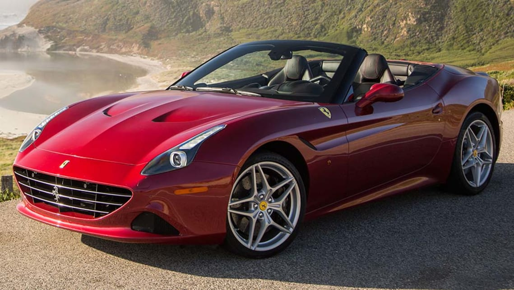

|
Aston Martin VanquishThe Aston Martin Vanquish is a grand tourer introduced by British luxury automobile manufacturer Aston Martin in 2001 as a successor to the Aston Martin Vantage (1993). The first-generation of the "V12 Vanquish," designed by Ian Callum and unveiled at the 2001 Geneva Motor Show, was produced from 2001 to 2007 as the flagship of the marque. The concept car, known as "Project Vantage" and the first Aston Martin design wholly styled by Callum, was built by the Ford Motor Company with craftsman Dilip Chhabria to display the company's vision for a future sports car to represent Aston Martin after the discontinuation of the Virage-based Vantage. The V12 Vanquish closely resembled the concept car, and featured carbon fibre and alloy construction, Aston Martin's most powerful V12 engine, and host of new technologies. A specially modified V12 Vanquish was driven by James Bond in the 2002 film Die Another Day. In 2004, a mildly updated version of the first-generation model named "V12 Vanquish S" was introduced featuring a more highly tuned engine and more track-oriented ride and handling. The V12 Vanquish was indirectly replaced by the DBS after 2007. |

|
Audi R8The Audi R8 is a mid-engine, 2-seater sports car, which uses Audi's trademark quattro permanent all-wheel drive system. It was introduced by the German car manufacturer Audi AG in 2006. The car is exclusively designed, developed, and manufactured by Audi AG's private subsidiary company manufacturing high performance automotive parts, Audi Sport GmbH (formerly quattro GmbH), and is based on the Lamborghini Gallardo and presently the Huracán platform. The fundamental construction of the R8 is based on the Audi Space Frame, and uses an aluminium monocoque which is built using space frame principles. The car is built by Audi Sport GmbH in a newly renovated factory at Audi's 'aluminium site' at Neckarsulm in Germany. |
Bentley Continental GTThe Bentley Continental GT is a grand tourer manufactured and marketed by British automaker Bentley Motors since 2003. It was the first car released by Bentley under Volkswagen AG management, after the company's acquisition in 1998, and the first Bentley to employ mass production manufacturing techniques. |
|
|  |
Ferrari CaliforniaThe Ferrari California (Type F149) is a grand touring sports car created by the Italian automobile manufacturer Ferrari. It is a two-door 2+2 hard top convertible. When originally unveiled in 2008, the California was powered by a front-mid mounted, rear wheel drive, naturally aspirated 4.3-litre V8. In 2012 a lighter, slightly more powerful variant, the California 30 was introduced. In 2014, Ferrari announced the second generation of the model, named California T powered by a new twin-turbo 3.9-litre V8. |

|
Lamborghini HuracánThe Lamborghini Huracán (Spanish for "hurricane"; [uɾaˈkan]) is a sports car manufactured by Italian automotive manufacturer Lamborghini replacing the previous V10 offering, the Gallardo. The Huracán made its worldwide debut at the 2014 Geneva Auto Show, and was released in the market in the second quarter of 2014. The LP 610-4 designation comes from the car having a 610 metric horsepower and 4 wheel drive, while LP stands for "Longitudinale Posteriore", which refers to the longitudinal mid-rear engine position. |
Maserati QuattroporteThe Maserati Quattroporte is a four-door full-size luxury sports saloon produced by Italian automobile manufacturer Maserati. The name translated from Italian means "four doors". The car is currently in its sixth generation, with the first generation introduced in 1963. |
|